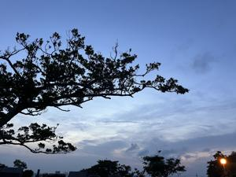
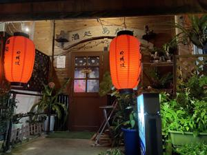

うるがいの話 ある日
最新: ケアマネジャーに怒る【うるがいの話 ある日】とは 一日だけのプログです
『うるがいの話』の最新一日だけのプログで、通信料が少なく経済的だ。カニの画像をクリックすると全ての日付が載る『うるがいの話』サイトを表示します
|
|
【うるがいの話】 うるがい(ｳﾙｶﾞｲ urugai)とは、『もずくがに』の名前でとても大きくなります。 |
|---|---|
|
|
【カミマヤーの話】 猫のことを方言でマヤーといいます。カミマヤー（kamimayaa）とは、神の猫のことです。 |
|
【たながぁの音楽】 たながぁ（ﾀﾅｶﾞｰ tanagaa）とは手長えびのことで、何種類かあり大きいのは車 エビぐらいになります。 |

|
【ぶながぁの話】 ぶながぁ(ﾌﾞﾅｶﾞｰ bunagaa)とは、赤い髪の毛、赤い身体、そして身長は１ｍ２０ｃｍ ぐらい、川の蟹を食べているの目撃された。場所は沖縄県国頭郡大宜味村のと ある村僕の隣近所に住んでいる爺さんから、聞いた話です。 |
|
|
【ギーマの話】 ギーマ(giima)とは、山原の里山に咲くスズランに似た、 花を付けます。実は食べられます、 気が付くと口の周りが紫になっています。 |
2023年10月05日 (木）ケアマネジャーに怒る
16:02
 
ヨメが、お義母さんの介護について担当のケアマネジャー（４０代らしい）と
４０分ほど電話で、相談する。そのあと、杓子定規だと！怒っていた。グチを
聞かされた私、変えたら？・・・・・と。
横尾忠則『言葉を離れる』２０１５年９月発売より引用
あとがき
２０１１年から２０１４年の間に『ユリイカ』で＜夢遊する読書＞と題して、
ぼくが最もニガ手とするテーマでエッセイを書いてきましたが、２０１２年（
７６才）まで書いたところで急に書けなくなり、その間２年２ヵ月ほど空白が
できてしまいました。この頃から極度に物忘れが激しくなり、言葉を日に日に
失っていく現象が起こりました。日常会話さえ困ることが多く人と話をしてい
る最中にも何度も絶句する場面が多くなったのですが、これも老化のひとつだ
から、誰にでもあることなので心配することないですよ、と大抵の人はなぐさ
めてくれます。一般的な初期段階は人名や地名などの固有名詞が出てこなくな
るのですが、ぼくの場合は、固有名詞の次に外来語がサッパリ出てこなくなり
、その内、日常生活の中で常に登場する、食物の名や物の名が出てこなくなり
ました。そんな記憶障害を抱えながら、文章を書くことが大変つらくなってき
ました。このような現象はすでに２０年ほど前から起っているのです。困った
ものです。だからなるべく人と話したり、文を書いたり、リハビリのつもりで
そんな機会を持つようにしていますが、公衆を前にしたり、メディアを対象に
する仕事の場合はかなり困るのです。
フムフム、７５才を超えるころからか、参考にしようと思う。
１５時５４分 ビットコインの総資産 ￥１１、９３８（↑５４）